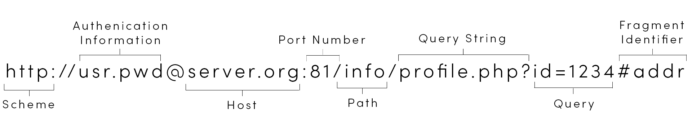

What is WWW?
It stands for World Wide Web. It is a global information medium which users can read and write via computers connected to the Internet. The term is often mistakenly used as synonym for the Internet itself, but the web is a service that operates over the internet.
The term is often mistakenly used as synonym for the Internet itself, but the web is a service that operates over the internet.
In September 1994, Tim-Berners Lee, founded the World Wide Web Consortium (W3C) at the Massachusetts Institute of Technology with support from the Defense Advanced Research Projects Agency (DARPA) and the European Commission. It comprised various companies that were willing to create standards and recommendations to improve the quality of the web.

Tim-Berners-Lee
In September 1994, Tim-Berners Lee, founded the World Wide Web Consortium (W3C) at the Massachusetts Institute of Technology with support from the Defense Advanced Research Projects Agency (DARPA) and the European Commission. It comprised various companies that were willing to create standards and recommendations to improve the quality of the web.
What is HTTP?
▹It stands for HyperText Transfer Protocol. An application layer used primarily to retrieve hypertext (on hypermedia) documents and resources on the World Wide Web. Jointly developed by the W3C and the IETF.
HTTP Versions

HTTP Fundamentals
1. HTTP typically runs on top of TCP/IP, using TCP port 80 by default or TCP port 443 for HTTPS (http over ssl/tls).
2. HTTP is based on a client server architecture
a. Clients a.k.a User Agents(UA) such as: Web browsers, web crawlers, email clients, other end user tools and applications.
b. Servers such as:
Origin Servers ▹ It isweb server that contained the very First Web Page.
Proxy Servers ▹ It allows you to authenticate and pass to one another until it reaches origin server
Gateways ▹ Gateways can convert protocols and can actually perform in any network later. HTTP traffic can be directed to gateways and then sent to proxies.
Tunnels ▹ A way in which various protocols from the network are encapsulated through the protocol of HTTP. HTTP tunnel applications are available for application software.
3. HTTP uses a request-response standard protocol
a. The Client sends an HTTP request message to the server
b. The server processes the request and replies with an HTTP response message
4. HTTP is a stateless communication protocol
a. Servers do not keep information about clients in between requests
b. Web applications effect session tracking using mechanism such as cookies on URL-encoded session information to keep track of related client requests.
5. HTTP provides support for other functionalities such as
a. Cache Control
b. Content media type (MIME) specifications
c. Language and character set specifications
d. Content/ transfer codings
e. Client-server protocol negotiations
f. Persistent connections
g. Request pipelining
h. Authentication/Authorization
* Gateway connects two networks together
* tunnels interconnection between two points
* MIME types: “Text/plain” “text/html” “img/jpg”
6. HTTP Resource Addressing
a.HTTP resources are identified using URIs (RFC 2396, RFC 3896) or more
b.URLs (http/https)
i. Scheme (http: or https:)
ii. Authority
1.User/authentication information/ credentials
2. Host
a. Domain name (resource to an IP address using DNS) of the server where the resource resides (or while created)
3. Port number
iii. Path to resource: resolved relative to the document root on the server
1. May prefer to a static or dynamic resource
iv. Query
1. Provides as key value pairs, with ampersand (&) separators between key/ value pairs
2. May be url encoded
v. Fragment identifier

HTTP Request Message
HTTP Response Message
HTTP Request Methods
-
1. GET
▶This method transfers a current selected representation of the resource identified by the Request URI.
▶It is the most commonly used HTTP Method
2. HEAD
▶It is the same as the get method, except the entry is not included in the response.
▶It is used to retrieve metadata about entry implied by request without transferring the entity itself.
3. POST
▶It performs resource about specific processing of the entities enclosed in the message body by the resource.
4. PUT
▶It stores the enclosed entity in the message body under the specified Request URI.
5. DELETE
▶By the term itself, it deletes data.
6. OPTIONS
▶It requests information about the communication.
7. TRACE
▶It requests a loop-back of the request message.
▶It is typically used for testing/ diagnostics of the response chain.
8. CONNECT
▶It requests the establishment of a tunnel in the destination to the origin server. It is used for https.
HTTP Method Properties
-
SAFE METHODS
▶These methods ought to be considered "safe". This allows user agents to represent other methods, such as POST, PUT and DELETE.
IDEMPOTENT METHODS
▶The methods GET, HEAD, PUT and DELETE share this property.
CACHE METHODS
▶The response generated could be cached or not.
HTTP Ectension Methods
-
▶PROPFIND
▶PROPPATCH
▶MKCOL
▶COPY
▶MOVE
▶LOCK
▶UNLOCK
▶DESTINATION
HTTP MESSAGE HEADERS
GENERAL HEADER FIELDS
-
▶ Cache Control
▶Connection
▶Date
▶Pagma
▶Trailer
▶Transfer-encoding
▶Upgrade
▶Via
▶ Warning
REQUEST HEADER FIELDS
-
▶Accept
▶Accept-charset
▶Accept-encoding
▶Accept-Language
▶Authorization
▶Expect
▶From
▶Host
▶If-match
▶If-modified-since
▶If-none-match
▶If-range
▶If-Unmodified-Since
▶Max-forward
▶Proxy-Authorization
▶Range
▶Referer
▶User-Agent
RESPONSE HEADER FIELDS
-
▶Accept-Range
▶Age
▶E-Tag
▶Location
▶Proxy-Authenticate
▶Retry-After
▶Server
▶Vary
▶WWW-Authenticate
ENTITY HEADER FIELDS
▶ Allow
▶ Content-encoding
▶ Content-language
▶ Content-length
▶ Content-location
▶ Content-MD5
▶ Content-range
▶ Content-type
▶ Expires
▶ Last Modified
HTTP STATUS CODE
Informal (1xx)
-
• 100 continue
• 101 switching protocol
• 102 processing (WebDAV)
Success (2xx)
-
•200 OK
•201 created
•202 accept
•203 non – authoritative information
•204 no content
•205 reset content
•206 partial content
Redirect (3xx)
-
•300 multiple choices
•301 moved permanently
•302 found
•303 see other
•304 not modified
•305 used proxy
•306 unused
•307 temporary redirect
Client Error (4xx)
-
•400 bad request
•401 unauthorized
•402 payment required
•403 forbidden
•404 not found
•405 method not allowed
•406 not acceptable
•407 proxy authentication
•408 request time – out
•409 conflict
•410 gone
•411 length required
•412 precondition failed
•413 request entity too large
•414 request URI too large
•415 unsupported media type
•416 request range not satisfiable
•417 expectation failed
•426 upgrade required
Server Error (5xx)
-
•500 internal server error
•501 not implementation
•502 bad gateway
•503 service unavailable
•504 gateway time – out
•505 HTTP version not supported

- What is HTML? - It stands for Hypertext Markup Language
- HTML Versions:
HTML 1.0 (1990)
HTML 2.0
HTML 3.0
HTML 3.2
HTML 4.0
HTML 4.01
HTML 5.0
- It’s role in modern web developments is to make the users throughout the world connected with the use of internet.
- It is use to create web pages or electronic documents that can be displayed on the World Wide Web.
XHTML
- XHTML Versions:
HTML 1.0 (1990)
HTML 1.1
HTML 1.2
HTML 2.0
HTML 5.0
Extensible Hypertext Markup Language
XHTML
Basic differences between HTML and XHTML
-
▶All elements have beginning and ending tags
▶All elements are nested properly
▶Elements and attribute names are case sensitive (lowercase)
▶Attribute values are quoted)
▶Attribute values cannot be minimized
XHTML Document Components
-
▶Document Type Declarations (DOCTYPES)
•HTML 4.01 DOCTYPES
•XHTML 1.0 DOCTYPES
▶Elements
•Tags
•Content(elements)
Kinds of Content
•Void elements
•Template Elements
•Raw Text Element
•Escalable Raw Text element
▶Attributes and Attribute Values
•Global Attributes
- id, class, title, alt, lang, dir, tab index, draggable, spell check, hidden, style, accesskey, href
•Custom Non-Visible Data Attributes
- data-toggle
- data-html
- data-content
▶Character Entity References
•- the text may be mixed with character references.
XHTML other information
-
>▶Author Styles
•External style sheets (recommended)
•Embedded styles
•Inline styles
▶User Style
▶User Agent Style (example default style sheet for HTML 4)
▶Quirks
•Older ways of rendering documents
▶Standards
•Following the specification by W3C for HTML, CSS